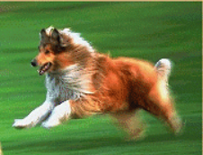

My Dog

My dog Sasha is my best friend. She likes to chase the soccer ball when I practice. It is so funny to see her running down the field trying to catch the ball with her mouth. It just won't fit!
Once Sasha saved my life. When I was only 4 years old, I started to go into the street to get a ball that had rolled across the street. Of course I did not think to look for cars! Sasha got in front of me and knocked me backwards onto the sidewalk. I was mad until I saw the car go by where I would have been. Then I was so happy that Sasha was smarter than I was!
Los Lobos - my team
01/05/02